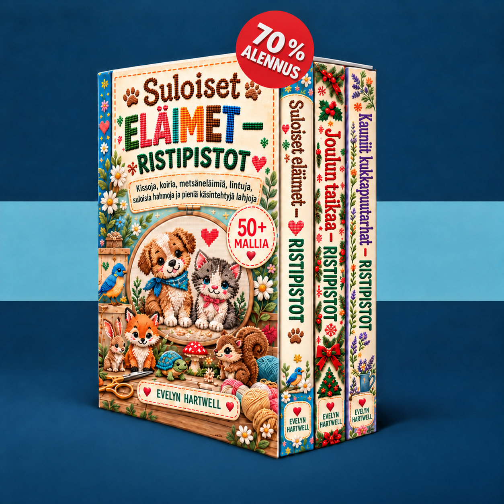

Valitse pieni kuvio, tutustu laskettavaan malliin ja kirjo ensimmäinen työsi vaihe vaiheelta.
Mallejasi ladataan…
Ota JavaScript käyttöön jäsensivua varten tai avaa kirjat suoraan alla olevista linkeistä.
Lähetä sähköpostia